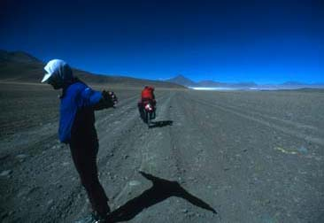
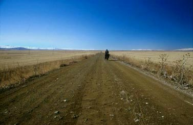

Inspiration |
| |
|  |
(Altiplano, 2001) |
| |
| Here
are some interesting words from cyclists and other people |
| |
| --------------------------------------- |
| |
| I
am not so strong. There are plenty of cyclists who are certainly much
stronger than I am. This trip at first glance seems like a physical
journey across the Tibetan Plateau, but in the end what determined if
I completed the trip was not my physical strength but rather my mental
strength. A mental strength that enabled me to get up morning after
morning and get on my bike to continue on this insane ride. A different
kind of freedom.
Ray Kreisel crossing whole Tibet by bicycle. |
| |
| While
two years in Africa I was rich because I had a fully loaded mountain
bike, reaching Europe, I am poor, because I have a fully loaded mountain
bike.
|
| |
| We
have left behind normal towns of families and children playing in the
streets. When we stop for a break or a short nap on the roadside, and
the wind has subsided, we are embraced with a powerful silence, a kind
of silence that I have rarely experienced in other places. A silence
that just leaves you with only the faint sound of a ringing in your
ears.
Ray Kreisel crossing Western Tibet |
| |
| What
it all comes down to in the end is your legs, determination and the
ability to improvise.
Janne Corax about gear lists |
| |
 |
(Anatolia, 2003) |
| |
| La route porte le sentiment illusoire de l'éternité. (The road holds the illusionary feeling of eternity) |
| --------------------------------------- |
| |
| We have an insatiable thirst to experience the world firsthand. We derive intense satisfaction in challenging difficult, insecure and uncomfortable environments. We take the time to observe and absorb, because we are not racing. We are not competing with anyone but ourselves. Our encounters with vastly different environments, lifestyles, and beliefs profoundly expand our interest and awareness of the world. Witnessing meager standards of living forever changes our perception of the western preoccupation with striving for material wealth. When we return home, we feel delighted at regaining the little pleasures that have been denied to us in faraway lands. We have frequent flashbacks of our expeditions and take pleasure in telling others our experiences. We become
tolerant of petty annoyances or discomforts and become patient in
our projects. Sensations we once held to be exciting become less so. Is it worth it? Like they say, "It's better to have loved (traveled) and lost (come home) than never to have loved at all." Once we have eaten from the tree of knowledge, we cannot go back to ignorance. While on expeditions, our attention is intensely focused and nothing else matters, but back home it is difficult to concentrate on what we are doing. Our successes strongly reinforce our self-esteem. We can do anything, but we find we don't really want to do anything but explore. We dream of more adventures, and when preoccupation turns to obsession, we are bound to realize them. We are fascinated with the stories of other explorers and we plan our expeditions to avoid their misfortunes. Are we escaping from something or have we been unfortunate with normal life? The true weight of these factors lies hidden from us. What do we search for? We don't really know, until we find it. Ultimately, we explore to find ourselves. Our passion for adventure continues... Chris Goulet about adventurers & explorers |
| |
| It
is better to have lived one day as a tiger than a thousand years as
a sheep.
Tibetan Saying |
| |
| Twenty
years from now, you will be more disappointed by the things you didn't
do than by the ones you did do. So throw off the bowlines. Sail away
from the safe harbour. Catch the trade winds in your sails. Explore.
Dream. Discover.
Mark Twain |
| |
| Whatever
you can do, or dream you can do, Begin it. Boldness has genius, power
and magic in it. Begin it now.
Goethe |
| |
| Do
not take life too seriously, you will never get out of it alive.
Elbert Hubbard |
| |